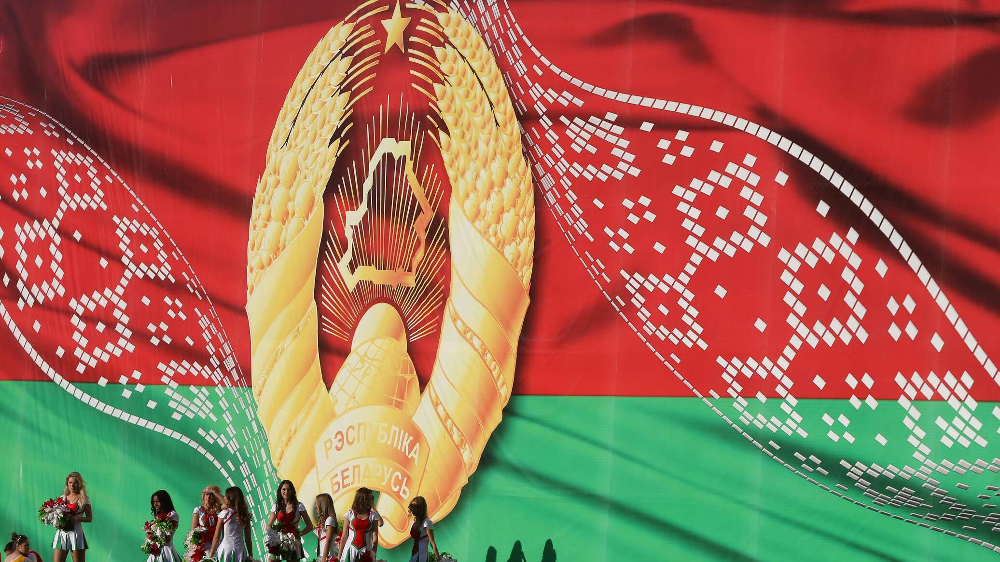

.
Герб Республики Беларусь

Государственный герб Республики Беларусь является символом
государственного суверенитета Республики Беларусь. Он представляет собой
размещенный в серебряном поле золотой контур Государственной границы
Республики Беларусь, наложенный на золотые лучи восходящего над земным
шаром солнца. Вверху поля находится пятиконечная красная звезда. Герб
обрамлен венком из золотых колосьев, переплетенных справа цветками
клевера, слева - цветками льна. Венок трижды перевит с каждой стороны
красно-зеленой лентой, в средней части которой в основании
Государственного герба Республики Беларусь в две строки начертаны золотом
слова "Рэспубліка Беларусь". Изображение Государственного герба
размещается на зданиях органов власти и ряда государственных учреждений,
внутри служебных кабинетов их руководителей, а также на печатях данных
органов, на монетах, паспортах граждан Республики Беларусь. В отличие от
Государственного флага, Государственный герб имеет более официальное
значение, поэтому не предусматривается возможность его свободного
использования гражданами. В частности, запрещается его размещение на
визитных карточках лиц, не являющихся государственными служащими. При
одновременном размещении Государственного герба Республики Беларусь и
герба административно-территориальной единицы либо территориальной единицы
Республики Беларусь Государственный герб Республики Беларусь должен
располагаться с левой стороны от другого герба, если стать лицом к ним.
При одновременном размещении нечетного числа гербов Государственный герб
Республики Беларусь должен располагаться в центре, а при размещении
четного числа гербов (более двух) - левее центра.

дополнительная информация
В изображении белорусского герба отражаются основные национальные и
духовные ценности белорусов: гражданское единство, трудолюбие,
миролюбивость.
Венок из золотых колосьев, цветов льна и клевера – благополучие и
достаток. С каждой стороны венок трижды перевит красно-зеленой лентой, в
средней части которой в основании герба в две строки начертаны золотом
слова "РЭСПУБЛІКА БЕЛАРУСЬ".
Земной шар – желание жить в мире и согласии, сотрудничать со всеми
странами.
Восходящее солнце – символ жизни и наилучшей доли.
Звезда – символ человека и человечества, знак мужества и высоких
помыслов, высоких устремлений народа.